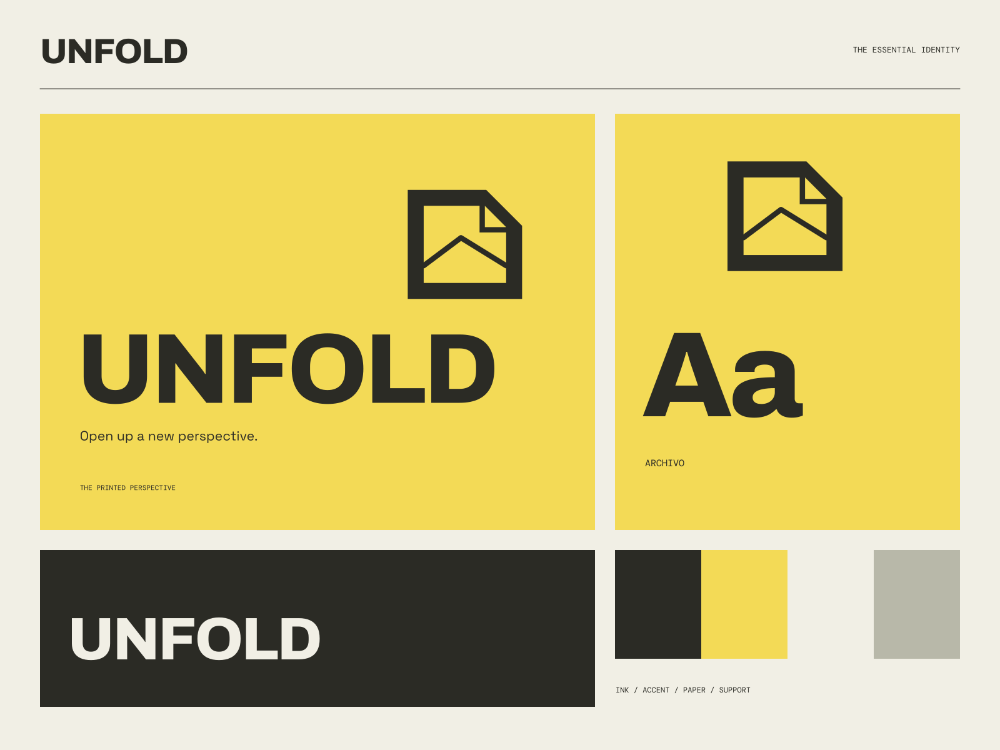

01
Ideas worth opening
Perspectives that make a familiar subject feel newly interesting.
DESIGN / CULTURE / NO FIXED FORMAT
Open up a new perspective. A publication with an open fold.
A coherent little world
A publication with an open fold. Open up a new perspective.
01
Perspectives that make a familiar subject feel newly interesting.
02
Editorial design that gives each story a useful form.
03
A publication that leaves room for the next point of view.

The point of view
Folded yellow paper, editorial crop marks, interlocking typographic planes, and full-bleed reading layouts. A publication that treats the page as both content and object.